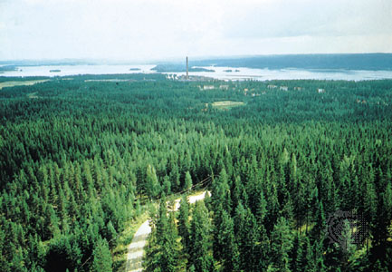

Forests The coniferous forests
The mantle of green coniferous forest is the predominant and most characteristic trait of the forest cover of the Park. A constant of the landscape that calls to mind the savage primitive environments, but also a resource with which the communities of the valleys have woven an unbreakable bond. The coniferous forests are spread throughout the protected area. Because of its good resistance to cold of the species that compose them, are on steep slopes of the Park the best conditions for development. At the top you push, as a rule, up to 1800-2000 meters, while below are a bit everywhere in contact with the formations of deciduous trees. Its forests, spruce forests, occupying almost the entire mountain plain in the north of the Park, while to the south are often intermingled with beech formations. On the slopes, fresh faces to the north of the semi mountainous areas, between 1000 and 1500 m of altitude, the spruce forests are interspersed at times, the forests of fir, for example in Val Genova and in Val di Tovel, but also on eastern edge of the Brenta. At the top, in the plane subalpine spruce mixes almost always the larch, which at the upper limit of the forest often gives rise to pure larch . At this altitude you can also find the beautiful - but not common - pine, which form the nuclei of a certain size just in a few locations, such as in Val di Fumo and Presanella. Another type of coniferous forest is formed by Scots pine, the disclosure of which is restricted to areas of low altitude of some sectors of the Brenta, in sunny places, often on poor soils and rocks.